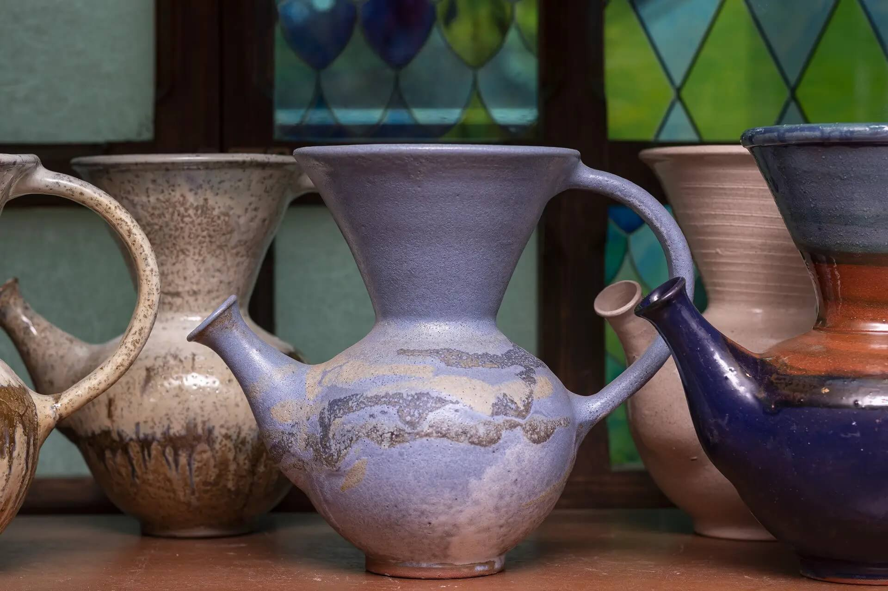

The Elegance of Chemex
Where form meets function in the pursuit of purity

The Versatile V60
The flavors of your favorite bean with precision and grace

The Classic French Press
Richness and simplicity for full-bodied brews

The Exquisite Espresso
All the intensity and complexity in no time

The Vibrant Vandola
Where tradition and innovation meet in a cup